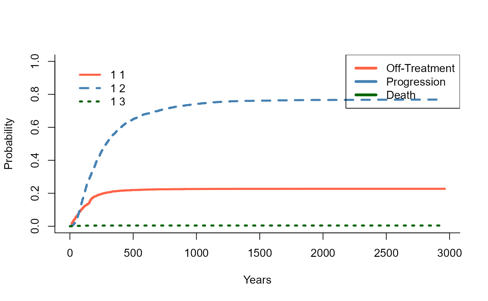
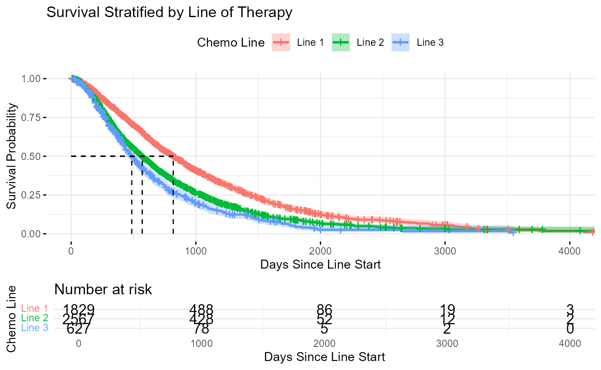

Sample Size Breakdown
## The total number of crc patients is 11340
## The total number of crc patients is 11340
## The total number of crc first-line patients is 1800
## The total number of crc second-line patients is 2718
## The total number of crc third-line patients is 697
##
##
## Table: Number of patients who received folfiri by line of therapy
##
## |Line_of_Therapy | Number_of_Patients|
## |:---------------|------------------:|
## |First Line | 1800|
## |Second Line | 2718|
## |Third Line | 697|
## The total number of crc patients with overlapping lines that were filtered out is 5215
## The total number of crc patients with single doses that were filtered out is 5148
## The total number of crc patients with treatment start pre-2010 that were filtered out is 8
##
##
## Table: Filtered Transition Counts Table
##
## |state |next_state | n|
## |:------------------------|:-------------|----:|
## |Death |NA | 3546|
## |On_Treatment_Target_Line |Death | 22|
## |On_Treatment_Target_Line |off_treatment | 1127|
## |On_Treatment_Target_Line |progression | 3811|
## |On_Treatment_Target_Line |NA | 62|
## |off_treatment |Death | 334|
## |off_treatment |progression | 421|
## |off_treatment |NA | 372|
## |progression |Death | 3189|
## |progression |NA | 1043|
Descriptive statistics of episodes stratified by line and state
Summary of Episode Duration by Line and State (Excl. Death
State)
| Line 1 - On_Treatment_Target_Line |
1829 |
289.0 |
188.0 |
93.0 |
363.0 |
7 (0.4%) |
22 (1.2%) |
| Line 1 - off_treatment |
509 |
276.8 |
130.0 |
26.0 |
292.0 |
124 (24.4%) |
170 (33.4%) |
| Line 1 - progression |
1506 |
476.9 |
327.0 |
145.0 |
647.0 |
1083 (71.9%) |
423 (28.1%) |
| Line 2 - On_Treatment_Target_Line |
2566 |
245.5 |
167.0 |
91.0 |
305.8 |
12 (0.5%) |
32 (1.2%) |
| Line 2 - off_treatment |
502 |
181.1 |
63.0 |
15.0 |
222.0 |
163 (32.5%) |
162 (32.3%) |
| Line 2 - progression |
2197 |
361.2 |
233.0 |
105.0 |
483.0 |
1679 (76.4%) |
518 (23.6%) |
| Line 3 - On_Treatment_Target_Line |
627 |
237.6 |
167.0 |
96.5 |
290.0 |
3 (0.5%) |
8 (1.3%) |
| Line 3 - off_treatment |
116 |
142.9 |
48.5 |
13.8 |
142.0 |
47 (40.5%) |
40 (34.5%) |
| Line 3 - progression |
529 |
312.5 |
207.0 |
92.0 |
395.0 |
427 (80.7%) |
102 (19.3%) |
| Overall - On_Treatment_Target_Line |
5022 |
260.4 |
174.0 |
92.0 |
318.0 |
22 (0.4%) |
62 (1.2%) |
| Overall - off_treatment |
1127 |
220.4 |
85.0 |
18.0 |
251.5 |
334 (29.6%) |
372 (33%) |
| Overall - progression |
4232 |
396.3 |
258.0 |
114.0 |
525.0 |
3189 (75.4%) |
1043 (24.6%) |
Cut-points
Cumulative incidence functions of transitions out of each health
state
Exit from on-treatment

Exit from progression

Exit from Off-treatment

Restricted mean survival time survival: comparisons across
lines
Restricted Mean Survival Time Comparisons Between Lines of
Therapy
| 2 vs 3 |
-45.90 |
-74.44 |
-17.36 |
0.0016 |
583.03 |
537.13 |
| 2 vs 1 |
108.27 |
88.65 |
127.89 |
0.0000 |
583.03 |
691.30 |
| 3 vs 1 |
154.17 |
124.78 |
183.56 |
0.0000 |
537.13 |
691.30 |
KM curve: time to death (overall survival)

KM curve: time to death (stratified by line)
